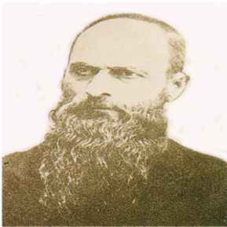

馬偕博士(George Leslie Mackay) 1844～1901

馬偕，加拿大人，1872年來台，他旅行台灣各地．致力教育、醫療、佈道。將自己漢化自稱為台灣人。赤腳走路、說台語、住泥土屋，娶一台灣女子。1901年病逝葬在淡水，在台有29年，座右銘為「寧願燒盡，不願腐銹」，一生奉獻台灣，著有「台灣遙寄」（From Far Formosa）一書．書中描述一生對台灣的熱愛，令人感佩。
立志要到海外宣教
馬偕博士蘇格蘭裔的加拿大安大略省（ Ontario）牛津郡（Oxford）人，1844年生於虔誠的基督教家庭。少時曾聽聞英國宣教士賓威廉（ Rev.William C.Burns）牧師講述在廈門傳教的情形，深受感動，立志要到海外宣教。1855年他進入多倫多（Toronto）師範學校深造。1858年師範學校畢業之後，在Maplewood和Maitland小學當了五、六年老師。1866年他進入多倫多大學及諾克斯神學院，次年轉學到美國普林斯頓神學院就讀。自美國普林斯頓神學院（Princeton Theological Seminary）畢業後不久，就向長老教會申請至海外宣教，獲准。他於清朝同治十年（1871年）12月奉派來台，搭乘「金陵號」船隻抵達打狗（即高雄）港。
勤學台語，成為台灣人女婿
來臺後，先在臺灣南部勤學漢字，並向牧童學台語，五個月後便能用台語傳教。第二年(1872)乘輪船北上，在3月9日 到達淡水，看見淡水蒼翠、茂盛的山嶺，毅然選定台灣北部為終身工作的地方，在此從事佈道、醫療與教育。自1872迄1880年短短八年間，在淡水、五股、苗栗、台北、基隆、新竹等地開設了二十所教會。也深入原住民聚落，翻山越嶺遠至宜蘭、花蓮傳教。他不但免費為人醫治疾病、贈送藥物。同時在傳教過程中，也教授門徒地理、天文、博物、醫術等西方科學知識。
1878年馬偕娶五股坑女子張聰明為妻，育有一子二女。，成為台灣人的女婿，也大大拓大他對台灣婦女的宣教事業。
創辦馬偕醫院與牛津學堂
光緒五年（1879年），馬偕在美國底特律同姓馬偕船長遺孀為紀念其丈夫捐助2500美金，創辦「滬尾偕醫館」，此為今日馬偕醫院之前身，亦為臺灣北部新式醫學發展的濫觴，中法戰爭時，該醫館曾因協助救治傷兵有功，獲劉銘傳的褒揚。1882年創設北台灣第一所西式學校「牛津學堂」（Oxford College）；1884年又開 設「女學堂」，首開台灣女子教育風氣之先。
病逝於淡水家中
馬偕晚年為喉癌所苦，但仍抱病講學。1901年6月2日病逝於淡水家中，埋骨於淡水，成為永遠的淡水人。淡水馬偕墓，在淡水中學校園中幽靜的墓園內，墓園裡葬身的人士多為其家人與嫡系學生。這裡原本是駐淡水外僑的墳場，西元 1901年6月2日 馬偕逝世後， 家人遵其遺囑，以一堵圍牆將其墓與其他洋人之墓隔開，以表明馬偕為臺灣人 。墓碑較高者是馬偕的墓，右邊是妻子張聰明之墓，左邊是偕叡廉夫婦（他們在 1914年創淡江中學），外圍則是學生、姻親之墓。馬偕夫婦的墓碑，正面是英文和河洛話發音拼音，背面是漢字；此墓園現為淡江中學管理，此墓園今已列入三級古蹟。
遺愛人間
馬偕博士在台灣北部傳教，不辭辛勞，設立教會達六十餘所，施洗信徒三千餘人。從當初被當地人排斥，到後來受鄉民敬重、獲巡撫頒獎。尤其是引進西方文化及醫療，如今仍遺愛人間，淡水人深感榮焉。